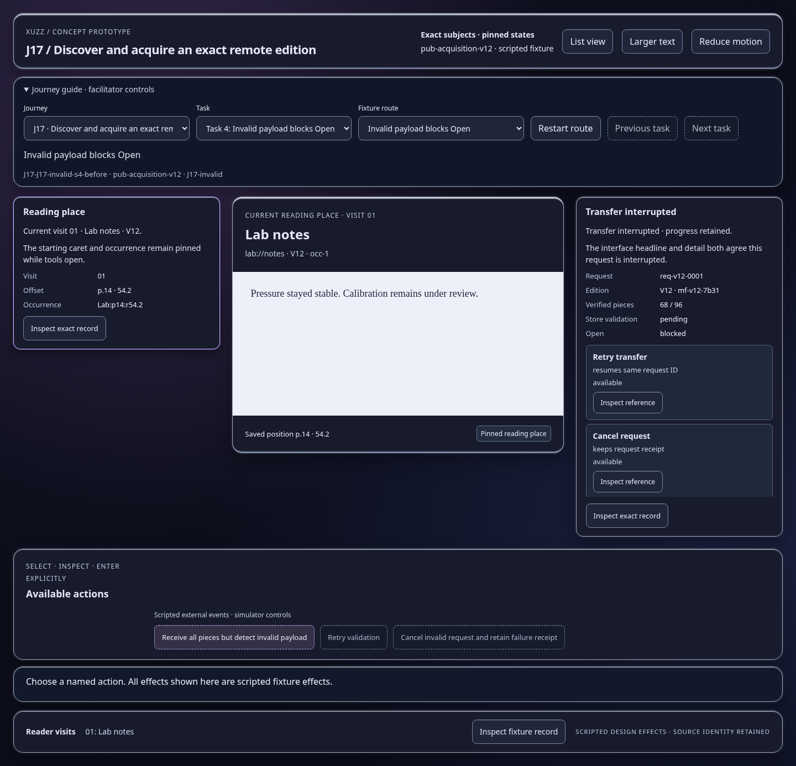
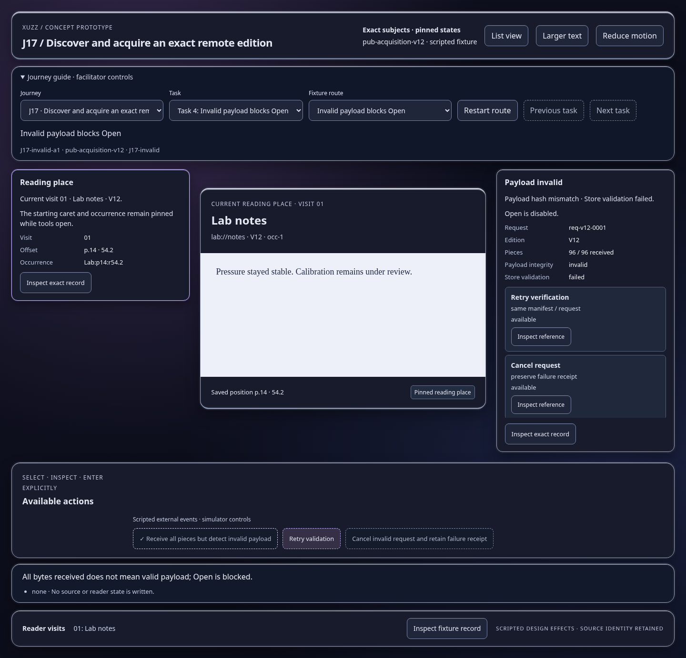
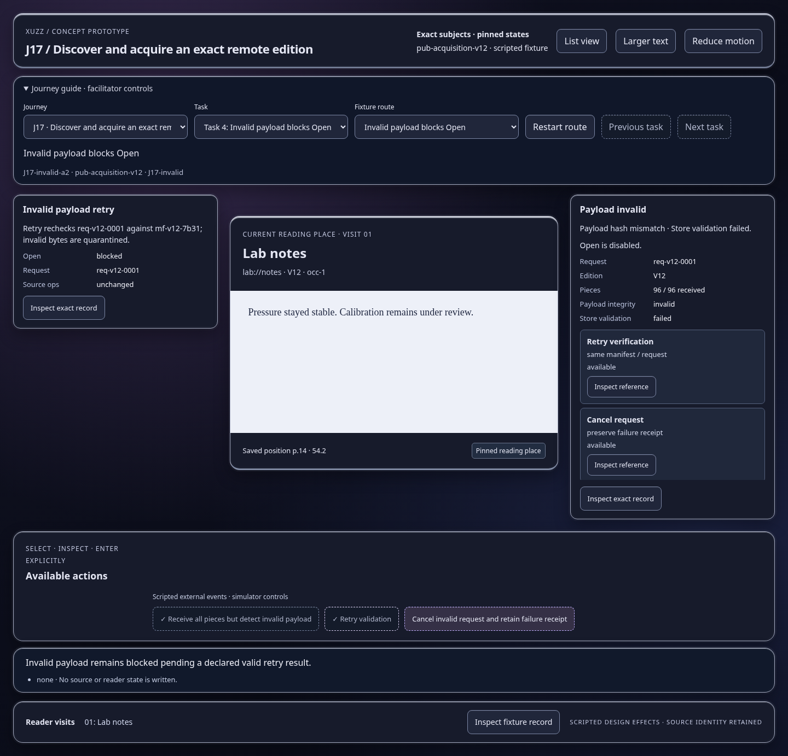
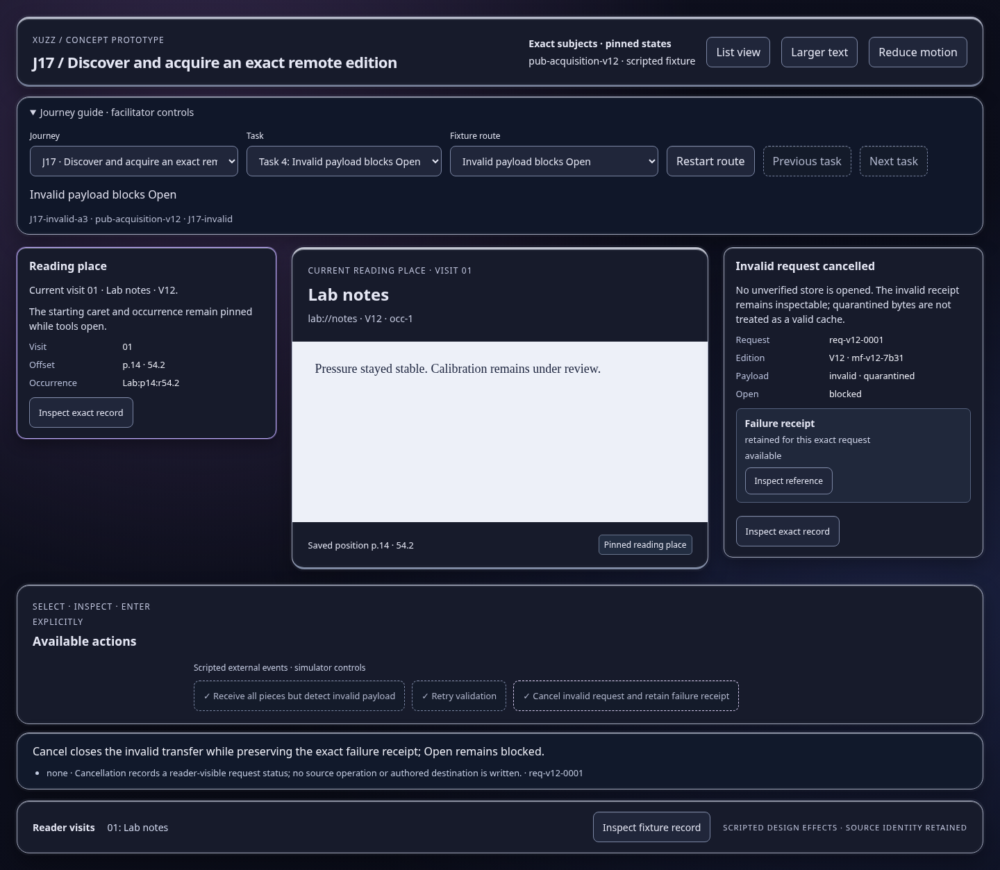

Scripted concept states; inspect the effect and identity trace. Images show actual prototype rendering.

All bytes received does not mean valid payload; Open is blocked.
Open this represented state
Invalid payload remains blocked pending a declared valid retry result.
Open this represented state
Cancel closes the invalid transfer while preserving the exact failure receipt; Open remains blocked.
Open this represented state